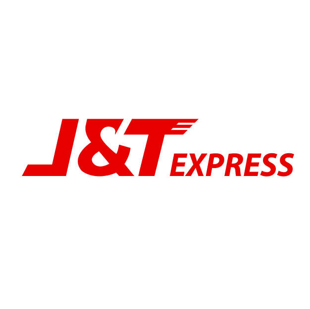
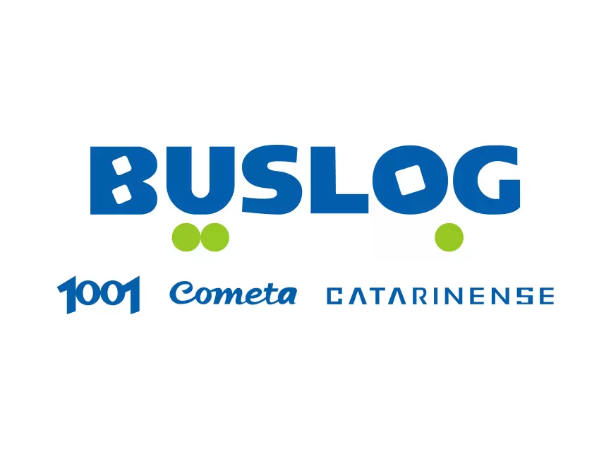
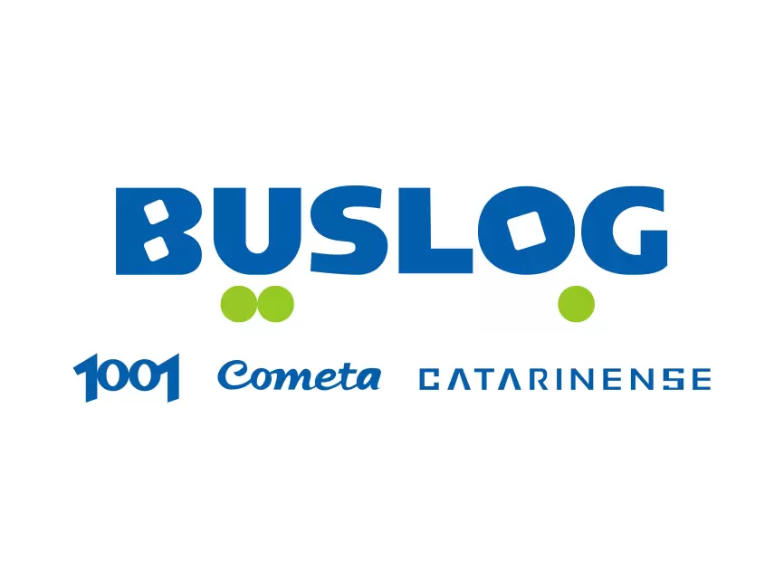
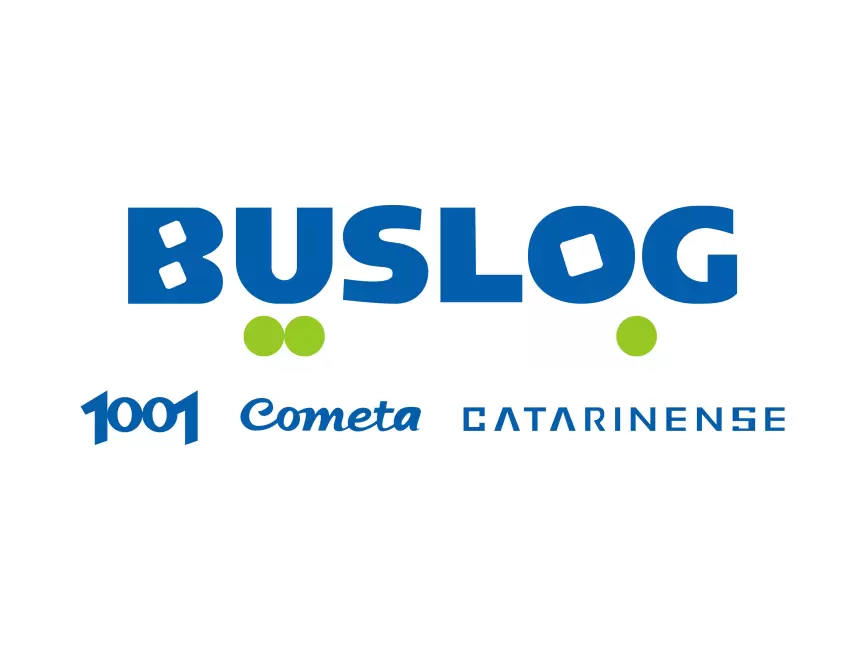

A plataforma de rastreamento mais completa do mercado
O Melhor Rastreio controla todos os envios postados na Azul Cargo Express e Correios
Porém, quem faz envios com etiquetas geradas na plataforma do Melhor Envio também consegue rastrear encomendas enviadas pela Jadlog, Buslog, Via Brasil e LATAM Cargo.

 


